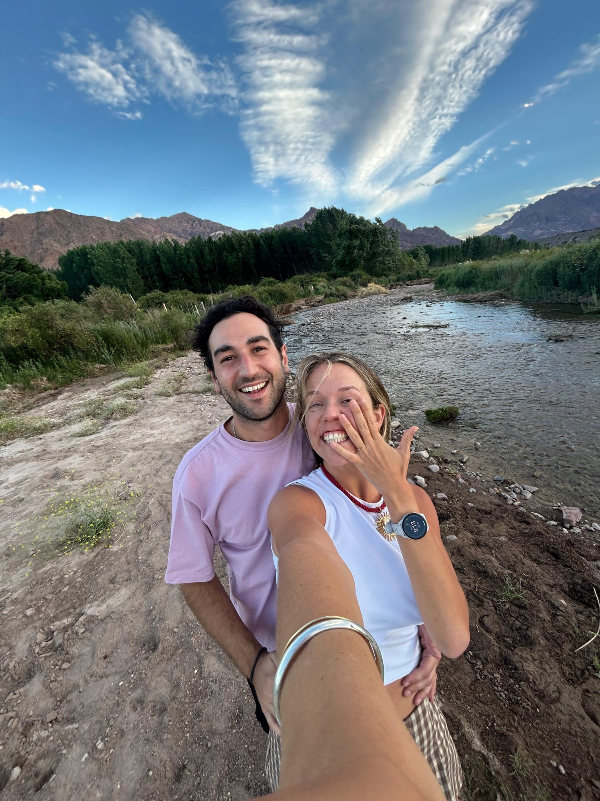

¡Nos casamos! · We're getting married
Cami & Dante
19 December
Chacras de Coria · Mendoza · Argentina
You're travelling a long way to be with us — this page has everything you need: the plan, the place, and how to make the most of a Mendoza summer.

The plan
Three days
Plan to be in Mendoza by the 16th, so you can settle in before it all begins. Anything still marked in amber will be filled in soon.
Pre-wedding gathering
A full day and evening together to welcome everyone who's made the trip. Details will be shared personally with invited guests.
Free day — rest & explore
Catch your breath, visit a bodega, cool off in a pool, or enjoy a long Mendocino lunch under the vines. The big day is tomorrow.
The wedding
Ceremony, dinner and a proper Argentine party under the summer stars — from six in the evening until five in the morning.
The place
The venue
Travel
Getting here
Mendoza (MDZ) sits at the foot of the Andes in western Argentina. From Europe it's one stop away — these are the routes we'd recommend, in order.
Ezeiza (EZE) → Mendoza
The main gateway: most long-haul flights from Europe land at Ezeiza, with onward domestic flights to Mendoza (~1 h 50). One caution — some connections depart from the other city airport, Aeroparque (AEP). Check both codes on your ticket and allow 3–4 hours if you need to transfer between them.
Plus: a chance to see Buenos Aires
Guarulhos (GRU) → Mendoza
Often the smoothest option: São Paulo has excellent connections from Europe, and there are direct flights on to Mendoza (LATAM and Gol) — no airport change, one clean transfer.
GRU → MDZ direct: ~3 h
Lima (LIM) → Mendoza
Also worth checking: LATAM flies direct from Lima to Mendoza, and Lima connects well from Madrid, Amsterdam and other European hubs.
One-stop from Europe
Santiago (SCL) → Mendoza
The hop over the Andes is short and spectacular, but connection times from Europe tend to be awkward — treat this as the backup if the routes above don't work for your dates.
Last resort — check timings
Coming from North America? Copa flies direct Panama City → Mendoza — often the easiest single connection. And once you've landed: Uber and Cabify work well in Mendoza and are inexpensive — install one before you fly, including for the airport ride (~20 min to the city). Tell us your flight details in the RSVP and we'll try to coordinate pick-ups and shared rides.
Book early — December is Argentine summer high season and the week before Christmas, so fares climb fast.
Mobility
Getting around
Mendoza is an easy city to move around in — three options, depending on your plans.
Uber & Cabify
Our default advice. Rides are cheap compared to northern Europe, cars arrive quickly in both the city and Chacras, and nobody has to skip the wine. Install one of the apps before you fly.
City ↔ Chacras: a few euros
Public transport
Mendoza runs on buses — "colectivos" — plus the Metrotranvía, a light-rail line through the city. You pay with a rechargeable SUBE card from any kiosk — or just tap a contactless debit or credit card on the reader; cash isn't accepted on board. Cheap and fine by day, less practical for Chacras at night.
Get a SUBE card at any kiosko
Rent a car
The best way to roam the bodegas, the mountains and the Valle de Uco at your own pace. Our recommendation: Malbec Rent a Car. If you're wine tasting, name a designated driver — alcohol limits here are strict.
Book ahead for December
Sleep
Where to stay
Two good options: stay in the city (more restaurants and life on your doorstep) or out in the wine country near the venue (vineyards, pools and quiet).
Park Hyatt Mendoza
~US$150–200 / nightThe classic five-star on Plaza Independencia. Pool, great service and a famous wine bar.
Diplomatic Hotel
~US$80–120 / nightComfortable four-star with excellent value, well located for restaurants and cafés.
Cavas Wine Lodge
~US$300–400 / nightBoutique lodge set among the vines with Andes views — the full wine-country romance.
Entre Cielos
~US$200–300 / nightDesign hotel with a beautiful spa (including a proper hamam), pool and vineyard views.
Airbnb? A great option here — houses with gardens and pools abound. Two areas to search: Chacras de Coria (the village of the venue, walking distance to the celebration) or 5ta Sección (leafy, elegant city district beside Parque San Martín).
Prices are rough guides — check current rates, and book early for December.
Practicalities
Good to know
A few things that make Argentina easier for first-time visitors.
Cards + some cash
Cards and contactless are widely accepted and give a fair rate. For pesos, bring some USD or EUR and change them at an official casa de cambio in the city centre (several around Av. San Martín) — never with street changers, and skip the airport counters. A Western Union transfer to yourself, picked up in pesos, is another favourite trick.
Desert summer
Mendoza is high desert: expect ~30 °C, fierce sun and very dry air. Sunscreen, a hat, sunglasses and constant water are non-negotiable. Evenings stay pleasantly warm, though it turns fresher out toward the mountains — Chacras included — so a light layer helps late at night.
eSIM or local SIM
An eSIM (Airalo, Holafly, etc.) set up before you fly is the easiest. Everything in Argentina runs on WhatsApp — make sure you have it.
220 V, Type I / C plugs
Argentina uses the slanted three-pin Type I sockets (Type C often fits too). Bring an adapter — hotels rarely have spares.
Spanish first
English is spoken at hotels and wineries, less so elsewhere. A few words of Spanish (and a smile) go a very long way with Mendocinos.
Siesta & late dinners
Many shops close for siesta in the afternoon and reopen around five. Dinner starts from 21:00, parties end at sunrise, and tipping ~10% in restaurants is customary. Adjust your body clock.
Make a trip of it
Mendoza in summer
Since you're crossing the world for us, stay a few extra days. December means long golden evenings, vineyards in full leaf and the Andes at their most dramatic.
Bodegas & tastings
This is Argentina's wine capital. Zuccardi (Valle de Uco), Catena Zapata and El Enemigo are favourites — most visits include a long paired lunch with Andes views. December is busy: book well ahead.
Bike through Maipú
Rent a bike and roll from vineyard to vineyard, stopping for tastings and olive oil along the way. One of Mendoza's most loved days out — go in the morning before the heat peaks.
Rafting in Potrerillos
An hour from the city, the Mendoza River runs high with summer snowmelt — white-water rafting and kayaking against a wall of mountains. Easy to book as a half-day trip.
Alta montaña day trip
Drive Ruta 7 toward Chile: the Potrerillos reservoir, Uspallata, Puente del Inca and viewpoints of Aconcagua — the highest peak in the Americas. Summer is exactly the season for it.
Cabalgatas in the foothills
Ride out into the Andes precordillera the classic way — many outings end with wine or a proper asado at sunset. Our pick: @cabalgataseguinos on Instagram.
Cacheuta hot springs
Thermal pools built into a mountain canyon, 40 minutes from the city — the spa side is calmer than the water park. A perfect slow day between celebrations.
A slow spa day
Two we love: the hamam and vinotherapy at Entre Cielos (Vistalba), and Sumac Spa in Chacras (Viamonte 4134) for massages minutes from the venue. Book ahead — December fills up.
Mendoza & Chacras
Tree-lined streets, Plaza Independencia, the enormous Parque San Martín and serious café culture in the city — and in Chacras, a pretty plaza, weekend market and slow lunches.
Eat & drink
Where to eat
A short list we'd take our friends to — in the city and around Chacras. We'll keep adding to it.
La Marchigiana · city centre
$$A Mendoza institution since the 1950s — Italian home cooking brought over by immigrants from Le Marche. Order the sorrentinos.
Siete Cocinas · city centre
$$Regional Argentine cooking — one menu drawing on the country's seven culinary regions. Creative without being fussy.
Casa El Enemigo · maipú
$$$The restaurant of the El Enemigo winery — long tasting lunches paired with their celebrated wines. Book well in advance.
Ruca Malén · wine country
$$$Winery restaurant with vineyard-and-Andes views. The step-by-step paired lunch is a Mendoza rite of passage.
El Paraíso de Chacras · chacras de coria
$$A charming local spot near the venue — relaxed lunches and dinners with a very Chacras, very unhurried feel.
Del Monte · chacras de coria
$For lomos — Mendoza's beloved grilled steak sandwich — this is one of the most popular lomiterías in the province, and it's right in Chacras. They're enormous; order one to share.
La Gloria · chacras de coria
$$A "cantina cool" on calle Mitre — café, wine shop, market and restó in one, with house vermouths and a lovely patio. One of the best-loved spots in the village.
Smash · chacras de coria
$Smash burgers for the night you need a break from steak — quick, casual and very good.
Lo de Brown · chacras de coria
$Classic corner bodegón at Almirante Brown y Viamonte: abundant Argentine comfort food — the matambre and empanadas are the stars — with a garden the kids can run around in. Hugely popular, so expect a wait.
La Central Vermutería · city centre
$$For the vermut hour — Argentina's favourite pre-dinner ritual. Vermouth on tap, picadas to share, and the perfect warm-up before a late dinner in the centre.
La Lucía · city centre
$$$Refined parrilla on Av. Sarmiento — superb steaks from the Josper grill, house pastas, a deep wine cellar and polished old-school service. One for a special night.
Soberana · city centre
$$$Michelin-Guide-selected bistro two blocks from Plaza Independencia — Argentine roots with French, Italian and Spanish touches, a glass-fronted wine cellar and serious cocktails.
Price guide: $ everyday · $$ mid-range · $$$ special occasion.
What to wear
Dress code
Think elegant — Argentines dress up properly for weddings — but above all wear something you'll feel wonderful in. There's no colour scheme and no strict rules.
One thing that matters: it's high summer, around 30 °C. Go for elegant and breathable — light fabrics you can dance in until sunrise. Evenings stay warm, though a light layer never hurts late at night.
Questions
Before you ask
The things everyone wants to know. Anything missing? Just write to us.
When should I book flights?
As soon as you can. December is Argentine summer high season and the week before Christmas — fares climb quickly and the good connections sell out first.
Do I need a visa for Argentina?
Most EU, UK and US passport holders can enter Argentina visa-free as tourists for up to 90 days. Rules vary by nationality, so double-check the current requirements for your passport before booking.
Staying on for Christmas or New Year?
Lovely idea — just know that on 24–25 and 31 December most restaurants and shops close for family celebrations, so book those dinners ahead. Midnight on both nights means fireworks across the whole city.
Can I bring a plus-one? Are kids welcome?
answer — to confirm
What language will the ceremony be in?
In Spanish. If yours is a little rusty, don't worry — you'll understand everything that matters, and we'll make sure you're never lost.
Is Mendoza safe?
Yes — Mendoza is generally among Argentina's more relaxed cities, and Chacras de Coria even more so. Just use normal big-city sense in the centre: keep your phone off café tables, mind your bag in crowds, and prefer Uber late at night.
Is it easy to get around at night?
Yes — Uber and Cabify run late in Mendoza and Chacras, though after a big night rides can take a little longer to arrive. We'll also help coordinate shared rides after the party.
Gifts
Your presence is the present
Truly — crossing an ocean to celebrate with us is more than enough. But if you'd like to contribute to our next adventure, you're welcome to make a transfer.
IBAN DE61 1001 1001 2975 1209 27
BIC NTSBDEB1XXX
RSVP
Are you coming?
Please reply by 26 August 2026 so we can plan properly for everyone travelling.
Questions about flights, dates or anything else? Write to dfmartinezcaram@gmail.com or camilasenetiner@gmail.com.